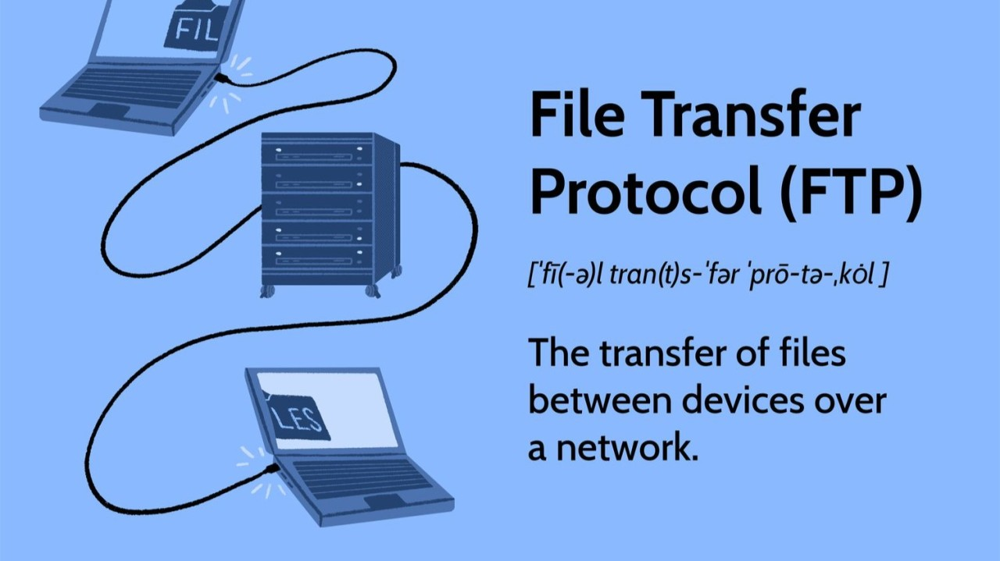

FTP is a protocol used to transfer files between computers over a network.
File Transfer Protocol (FTP) is used to transfer files between a client and a server over a network. A user connects to an FTP server using login credentials, then uploads or downloads files between their computer and the server.
FTP is important because it provides a standard way to transfer files between computers over a network. It is widely used for uploading websites to servers and sharing large files.